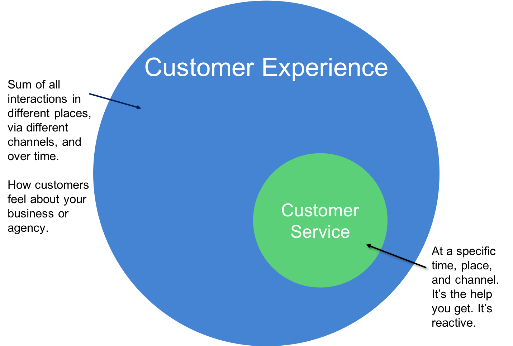

Will create experiences that meet or exceed customer expectations.
The Customer Experience CoE demonstrates the business value of customer experience as a discipline, works with agencies to develop a better understanding of their customers and their needs and helps translate those findings into actions that create outstanding experiences.
Sep 18, 2018
Customer service is a key part of customer experience, but the two are not the same.
Customer service is an event that happens between a customer and a service provider, at a specific time and place. It’s the advice you get, the help you receive. Customer service is responsive to a person’s needs at a place and point in time. Good customer service is focused on making specific interactions positive and effective.
Customer experience is the sum of a person’s involvement with a brand or an agency. It encompasses all their interactions in different places, via different channels, and over time. Customer experience is about how people perceive their relationship with the service provider. It’s about how they feel, and what they do as a result.
On our part, designing good customer experiences requires us to consider the customer’s journey with our service from start to finish, even before they first come to us.

Aug 17, 2018
The Customer Experience Center of Excellence followed a customer journey mapping model for the Farm Service Agency (FSA) to evaluate the experience of producers and service center staff in applying for and processing direct farm loan applications.
We conducted interviews and ethnographic observations with over 40 FPAC subject matter experts and employees in Washington DC and at six service centers, and almost 40 producers in six states. We also hosted four workshops with stakeholders in Washington, DC to guide the research, update the customer journey map, vet important findings, and develop recommended solutions to improve the customer experience.
Among the 13 key findings, the following were identified as the most impactful:
- Producers value in person interactions with Loan Officers
- Loan Officers deal with fragile and limited technology at service centers
- First-time borrowers need help understanding the entire loan process
- Producers find loan forms challenging
- Producers find the current loan limits constraining and inadequate to cover their needs
Aug 03, 2018
Driving through a landscape of stretched cotton fields and grasslands towards Hollis, Oklahoma was both mesmerizing and a refreshing reminder I was far from the traffic-ridden hustle of downtown DC. Located in the southwest corner of Oklahoma, Hollis could be considered a nondescript pass-through town on a cross-country drive, but for my fellow researcher and I, Hollis, a small town with a population just above 2,000 people, was a long-planned destination.
We found ourselves in rural Oklahoma to understand from the perspective of local farmers what it’s like to obtain a USDA farm loan. Although not commonly known, ownership and operating loans are provided to small farmers by the USDA, and our core project was to improve the experience of the farmer as he or she completes the loan application process and moves through the administration lifecycle. We were visiting this countryside town for ethnographic research on USDA farm loans. Ethnographic research, or the study of people in their culture, is a core part of the Customer Experience Center of Excellence’s (CX CoE) approach to finding solutions that meet the needs of end customers.
In and around Hollis, where farming is one of the mainstays of the region’s economy and livestock, wheat, and cotton are the key products, we met the USDA field office team and farmers who represented the diversity of USDA farm loan borrowers.
We first met Simon, who had recently borrowed from the USDA. Simon, also a veteran, grew up helping on his family farm and returned to it after retiring from the military. We met him at his cattle farm, and he was kind enough to permit us to ride in his feeder truck around the 200-plus acres of his lot - we actually conducted our interview in the middle of the field. We learned about the difficulty he had in understanding eligibility requirements from the information on the loan application website. It was much easier when a loan officer walked him through the requirements and handed him an application packet that was tailored to his needs.
When we did a solution prioritization activity with each of our interviewees, it was interesting to see that age and preference for digital solutions weren’t always correlated as we would expect them. Glenn, a young rancher and member of the Texas Cowboys Association, feared digital solutions will replace the personal relationship he has with his loan officer. Whereas Sarah, a farmer in her 50s and savvy with the Internet, longed for the option to be able to check her loan balance and payment information online without having to reach out to someone at the local service center, which to Sarah felt like an onerous process for both her and her loan officer.
We also visited the regional USDA service center, which is a field office of the USDA that helps local farmers. At the service center, we spent quality time interviewing and following around Larry, the Farm Loan Manager, who had been at this USDA service center for over 30 years. He gets in to work at the crack of dawn and he lives by the mission of lender of first opportunity. If a farmer or rancher is in need of a loan and they can’t get it elsewhere, he will work his hardest to assist the farmer, even if it means securing a loan for a short period of time so that the farmer can get to a stable place. We also met Larry’s team of loan officers and program technicians who have figured out efficiencies, despite frequent and common failures in IT and telecom systems, to close loan applications and service them with the least amount of delays possible. We saw rooms and desks full of boxes from loan paperwork that limits their ability to grow the team without the option of being able to expand or relocate.
Although our research wasn’t conducted in the most conventional of meeting spaces, our team and USDA learned more than we expected from working in the field (literally!). We learned more about the USDA borrowers on their farms - even once working from the back of a pick-up truck - and in their homes on their kitchen-room tables than we could from a remote conference call all the way back in D.C. The best place to understand a customer is in their natural environment, and that’s what we aimed to do.
During our four days in Hollis, everyone we met was exceptionally kind and welcoming. Over the course of our research about USDA farm loans, our teams also traveled to Georgia, Oregon, New York, North Dakota, and Virginia. Through in-depth interviews, observation of their physical environment and solution prioritization exercises, we learnt about small farmers’ relationship with USDA and their experience of obtaining a loan through USDA. In the process, we uncovered insights, opportunities and unmet needs. The customer journey map that was produced as a result of this research helps teams working on farm loans and farmers.gov gain a shared understanding of the process and the ability to identify quickly where changes need to happen to alleviate pain points.
May 17, 2018
Customer Journey Mapping (CJM) is intended to guide program development and decision making and help operationalize a customer-centric approach at USDA. For the farm loans program, CJM activities capture program touchpoints at each step of the customer’s journey to provide a research-based understanding of producers’ and loan officers’ pain points, points of delight, and moments of truth.
These phases, emotions, and critical events are captured in a multi-dimensional diagram to provide a shared understanding of the current journey. The CJM process and findings are intended to help USDA prioritize its customer-facing activities and develop action plans to improve the customer experience.